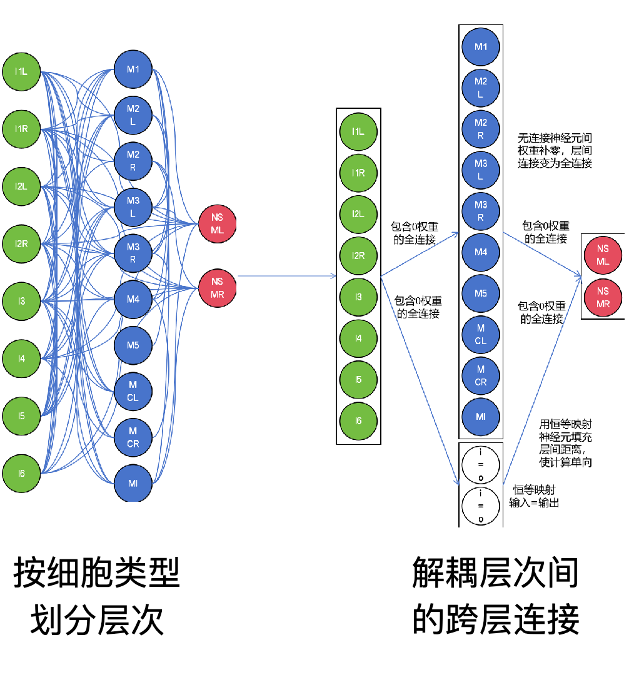

液态神经网络（LNN）
模型概述
液态神经网络（LNN）是一种新型的神经网络架构，旨在通过模拟液态物质的动态特性来提高信息处理能力。与传统神经网络不同，LNN 通过引入时间和空间的连续性，使得网络能够在更高维度上进行学习和推理。这种方法特别适用于处理复杂的时序数据和动态系统。
本示例模拟的眼线虫颈部神经，网络按照神经元类型不同可分为三层：
第一层：包含I1L、I1R、I2L、I2R、I3、I4、I5、I6共8个神经元。
第二层：包含M1、M2L、M2R、M3L、M3R、M4、M5、MCL、MCR、MI共10个神经元。
第三层：包含NSML、NSMR共2个神经元。
每层都与包括其自身的全部三层网络连接，共9组连接关系：
第1组：连接第一层及其自身，稀疏连接。
第2组：连接第一层及第二层，稀疏连接。
第3组：连接第一层及第三层，稀疏连接。
第4组：连接第二层及第一层，稀疏连接。
第5组：连接第二层及其自身，稀疏连接。
第6组：连接第二层及第三层，稀疏连接。
第7组：连接第三层及第一层，稀疏连接。
第8组：连接第三层及第二层，稀疏连接。
第9组：连接第三层及其自身，稀疏连接。
{kind=link}

图一：LNN网络结构示例
实现代码
1from snntorch import functional
2
3import snntorch as snn
4
5import torch.nn as nn
6
7import pickle
8
9#网络与连接关系均可由用户自定义，包括神经网络层数、各层神经元数以及连接方式，示例为眼线虫颈部神经模拟
10
11betaI = 0.8
12
13betaM = 0.9
14
15betaN = 1.0
16
17threshold = 1.0
18
19num_input = 10
20
21num_I = 8
22
23num_M = 10
24
25num_N = 2
26
27class WormNet(nn.Module):
28
29 def __init__(self):
30
31 super().__init__() # 初始化父类
32
33 # 神经元
34
35 self.neuron_I = snn.Leaky(beta=betaI, threshold=threshold)
36
37 self.neuron_M = snn.Leaky(beta=betaM, threshold=threshold)
38
39 self.neuron_N = snn.Leaky(beta=betaN, threshold=threshold)
40
41 # 化学+电连接
42
43 self.input_to_I = nn.Linear(num_input, num_I, bias=False) # 输入到I
44
45 self.I_to_M = nn.Linear(num_I, num_M, bias=False) # I到M
46
47 self.M_to_N = nn.Linear(num_M, num_N, bias=False) # M到N
48
49 def forward(self, spike_input): # 前向推理
50
51 time_steps = spike_input.shape[0] # 时间步长
52
53 mem_I = self.neuron_I.init_leaky() # I神经元膜电位
54
55 mem_M = self.neuron_M.init_leaky() # M神经元膜电位
56
57 mem_N = self.neuron_N.init_leaky() # N神经元膜电位
58
59 spk_I_prev = torch.zeros(num_I) # I神经元上一个时间步的脉冲
60
61 spk_M_prev = torch.zeros(num_M) # M神经元上一个时间步的脉冲
62
63 spk_N_prev = torch.zeros(num_N) # N神经元上一个时间步的脉冲
64
65 spk_I_rec = [] # I神经元脉冲记录
66
67 spk_M_rec = [] # M神经元脉冲记录
68
69 spk_N_rec = [] # N神经元脉冲记录
70
71 for t in range(time_steps): # 按时间步推理
72
73 # I神经元的输入：来自外部输入
74
75 input_I = self.input_to_I(spike_input[t])
76
77 spk_I, mem_I = self.neuron_I(input_I, mem_I)
78
79 # M神经元的输入：来自上一个时间步的I神经元
80
81 input_M = self.I_to_M(spk_I_prev)
82
83 spk_M, mem_M = self.neuron_M(input_M, mem_M)
84
85 # N神经元的输入：来自上一个时间步的M神经元
86
87 input_N = self.M_to_N(spk_M_prev)
88
89 spk_N, mem_N = self.neuron_N(input_N, mem_N)
90
91 # 记录脉冲
92
93 spk_I_rec.append(spk_I)
94
95 spk_M_rec.append(spk_M)
96
97 spk_N_rec.append(spk_N)
98
99 # 更新上一个时间步的脉冲
100
101 spk_I_prev = spk_I
102
103 spk_M_prev = spk_M
104
105 spk_N_prev = spk_N
106
107 return torch.stack(spk_I_rec), torch.stack(spk_M_rec), torch.stack(spk_N_rec)
108
109connections = “/your/path/to/connection.pkl”
110
111with open("/your/path/to/input.txt") as file:
112
113 inputdata = file.readlines()
114
115def main():
116
117 data = functional.framework(net,connections,inputdata)
118
119 net_output = functional.run(data)
120
121if __name__ == "__main__":
122
123 main()
运行结果
TODO: 添加运行结果